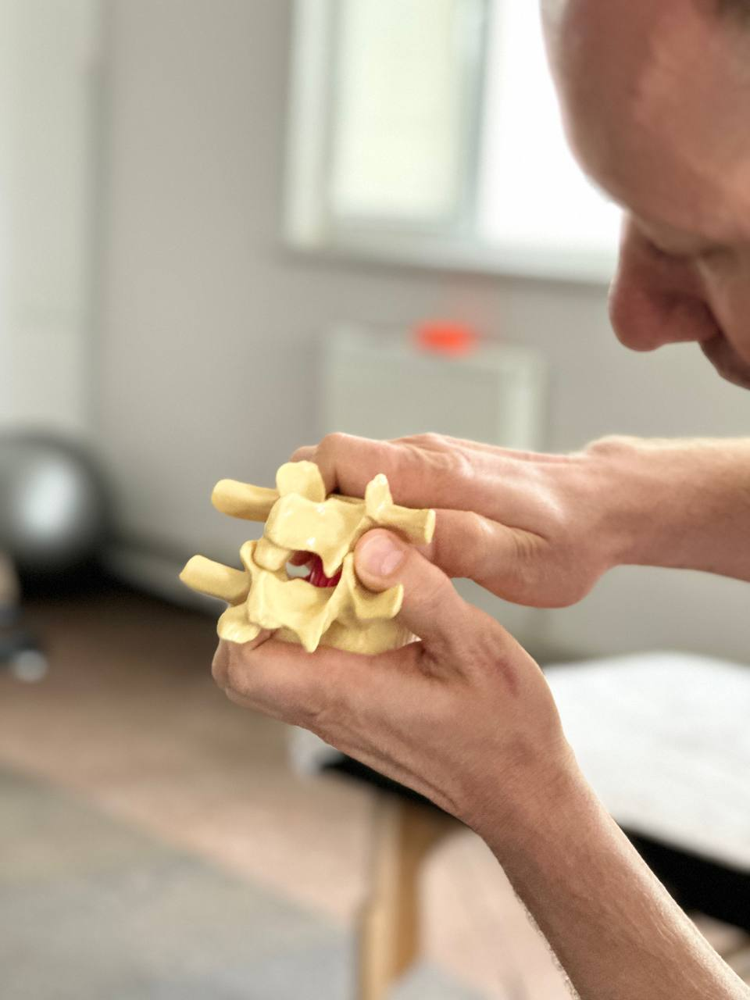
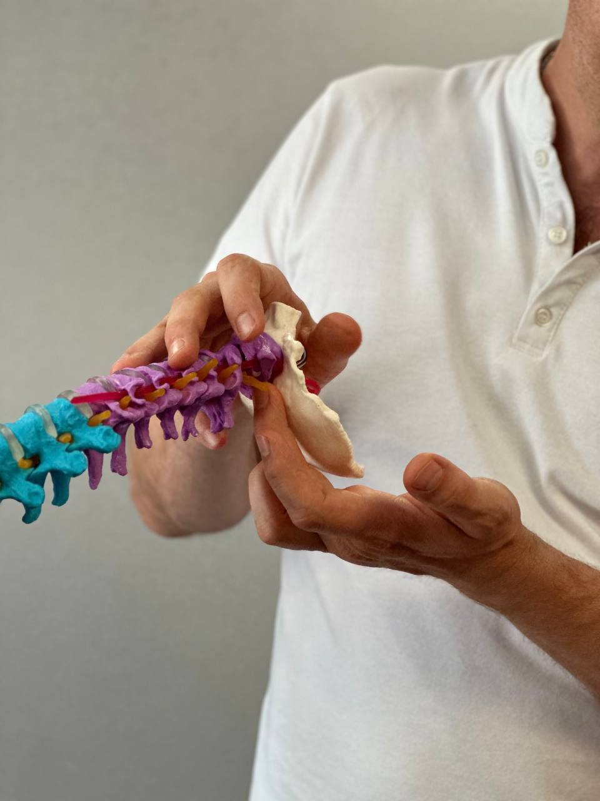
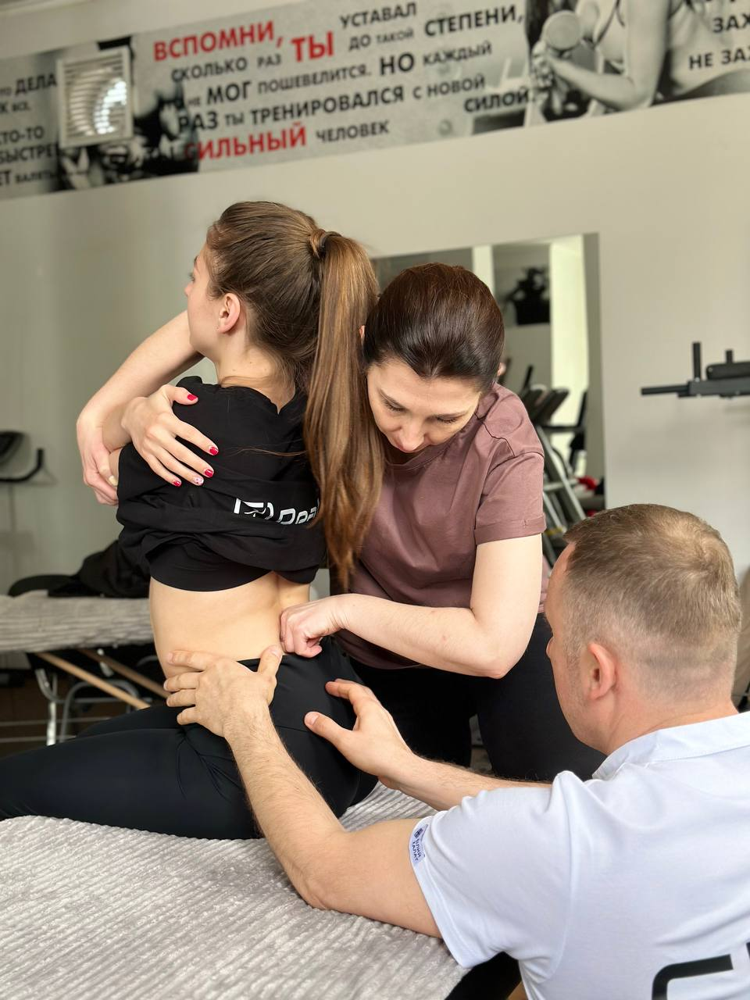

Нейромеханіка як методика
Нейромеханіка — це сучасний функціональний підхід до роботи з тілом, який розглядає організм як єдину систему.
ДетальнішеПрактична освітня програма для спеціалістів, які хочуть краще розуміти тіло, бачити реальні причини порушень і працювати системно: від діагностики до ефективної корекції та стійкого результату.
Кому підходить
ProNeuroFit — це система, яка об’єднує діагностику, корекцію та рух — в єдину модель роботи з тілом людини.
Онлайн записЩо таке ProNeuroFit

Це не набір технік. Це структурований підхід, у якому спеціаліст розуміє:
Програма поєднує:
Що таке нейромеханіка
Нейромеханіка — це сучасний функціональний підхід до роботи з тілом, який розглядає організм як єдину систему.
Детальніше
Завдання спеціаліста — не просто прибрати симптом, а зрозуміти, чому система була змушена його створити.
Детальніше


Нейромеханіка допомагає спеціалісту працювати безпечно, логічно, фізіологічно, більш точно та з більш стійким результатом.
Детальніше
Нейромеханіка — це підхід, у якому спеціаліст розуміє, як формується проблема і як допомогти організму відновити більш правильну функцію.
ДетальнішеПрограма навчання
Кожен модуль — окремий практичний семінар і частина єдиної системи навчання. Програма побудована послідовно: від основ розуміння руху, діагностики та діалогу з тілом — до фасціальної роботи та біодинаміки — далі до функціональних корекцій через прямий і непрямий підхід — і потім до інтеграції всіх отриманих знань у роботі з хребтом і краніальними структурами.
«Нейромеханіка в постурології: основи функціонального тестування та мануальних корекцій»
Детальніше«Фасціальні мануальні корекції у реабілітаційній нейромеханіці. Основи біодинаміки»
Детальніше«Функціональні мануальні корекції у реабілітаційній нейромеханіці: прямий та непрямий підхід»
Детальніше«Нейромеханіка хребта та черепа: діагностика та функціональні мануальні корекції»
ДетальнішеДля кого це навчання

Для кого це навчання
Що отримає спеціаліст
Викладач
Сергій Мелашенко
Система ProNeuroFit створена на основі багаторічної клінічної практики, викладання та постійного пошуку більш точної, безпечної й ефективної моделі допомоги пацієнту.

Старт курсу
Стандартна ціна
10 500 грн
Рання реєстрація
8 400 грн
знижка 20% · до 17 травня
Контакти для реєстрації — Кирило
+380 (99) 204 33 14
ProNeuroFit
Це навчання для тих, хто хоче вийти за межі набору технік і перейти до системної професійної роботи з тілом людини.
Програма поєднує:
Курс складається з 4 послідовних модулів.
Вже після першого модуля спеціаліст може впроваджувати принципи нейромеханіки у практику.